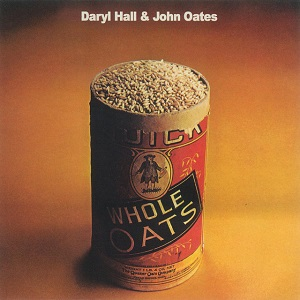

David Bowie
The Rise and Fall of Ziggy Stardust and the Spiders From Mars
9¾

Popol Vuh
Hosianna Mantra
8¾

Neu!
Neu!
8½

Curtis Mayfield
Superfly
8¼

Caetano Veloso
Transa
7¾

Yes
Close to the Edge
7¾
Nick Drake
Pink Moon
7¾

Can
Ege Bamyası
7½

Milton Nascimento / Lô Borges
Clube da Esquina
7½

Miles Davis
On the Corner
7¼

Faust
So Far
7¼
Black Sabbath
Black Sabbath Vol. 4
7
Lou Reed
Transformer
7

T. Rex
The Slider
7
Roxy Music
Roxy Music
7
Pink Floyd
Obscured by Clouds
7
Steely Dan
Can't Buy a Thrill
6¾
Paul Simon
Paul Simon
6¾
Townes Van Zandt
The Late Great Townes Van Zandt
6¾
Jethro Tull
Thick as a Brick
6½

Genesis
Foxtrot
6½
Deep Purple
Machine Head
6¼

Fela & The Africa 70
Roforofo Fight
6¼
Kraftwerk
Kraftwerk 2
6
Joni Mitchell
For the Roses
5¾

Fela & The Africa 70
Shakara
5¾

The Rolling Stones
Exile on Main St.
5½
Pharoah Sanders
Black Unity
5¼

Elton John
Honky Château
5¼
Jean-Claude Vannier
L'enfant Assassin des Mouches
4¾

Tangerine Dream
Zeit
4¾
Neil Young
Harvest
4½
Stevie Wonder
Talking Book
4½
Big Star
#1 Record
4½
Slade
Slayed?
4½

Analogy
Analogy
4½

Stevie Wonder
Music of My Mind
4¼
John Coltrane
Infinity
4¼

Robbie Băsho
The Voice of the Eagle
4

The O'Jays
Back Stabbers
4

Van Morrison
Saint Dominic's Preview
4

Alice Cooper
School's Out
3¾

Fleetwood Mac
Bare Trees
3¾
Scorpions
Lonesome Crow
3¾

Gil Scott-Heron
Free Will
3¾

Herbie Hancock
Crossings
3¼
Tim Buckley
Greetings From L.A.
3¼

Annette Peacock
I'm the One
3

Eagles
Eagles
3
Townes Van Zandt
High, Low and In Between
2¾
Jeff Beck Group
Jeff Beck Group
2¾

Witch
Introduction
2¾

Françoise Hardy
Et si Je m'en Vais Avant Toi
2½
Chico Buarque / Nara Leão / Maria Bethânia
Quando o Carnaval Chegar
2½
Captain Beefheart & The Magic Band
Clear Spot
2¼

Thin Lizzy
Shades of a Blue Orphanage
2¼
Funkadelic
America Eats Its Young
2¼
Dusty Springfield
See All Her Faces
2
Lou Reed
Lou Reed
2
Earth, Wind & Fire
Last Days and Time
2

Michael Jackson
Got to Be There
2
Véronique Sanson
Véronique Sanson
1¾
Meiko Kaji
Gincho Wataridori
1¾
Captain Beefheart
The Spotlight Kid
1¾
The Doors
Full Circle
1¾
Michael Jackson
Ben
1¾

Dionne Warwick
Dionne
1¾
Françoise Hardy
Françoise Hardy
1½
Bill Evans / George Russell Orchestra
Living Time
1½

Cher
Foxy Lady
1½

Johnny Cash
A Thing Called Love
1½
- 
Daryl Hall & John Oates
Whole Oats
1¼
REO Speedwagon
R.E.O. / T.W.O.
1¼

Vangelis
Fais que Ton Rêve Soit Plus Long que la Nuit
1¼

Scott Walker
The Moviegoer
1
Creedence Clearwater Revival
Mardi Gras
1

Tom Jones
Close Up
1

Orquesta La Conspiración
Ernie's Conspiracy
1

John & Yoko / Plastic Ono Band
Some Time in New York City
0¾